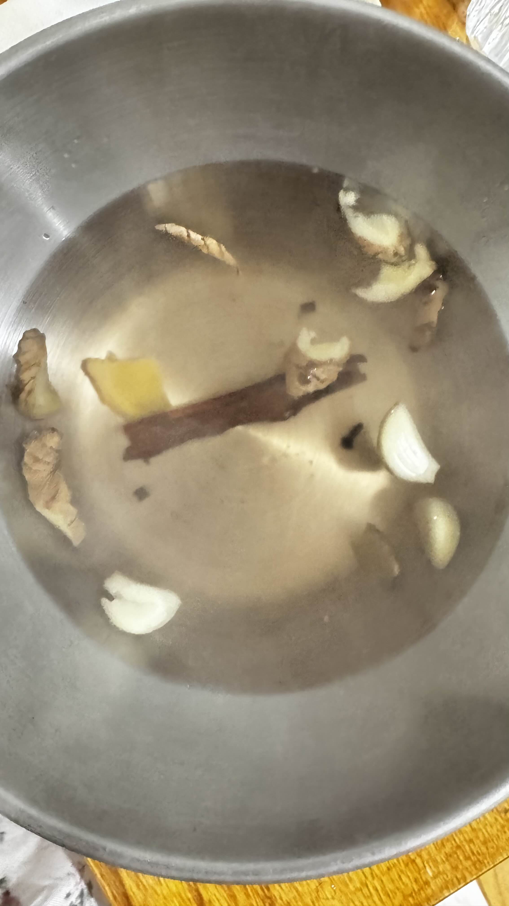

Add all spices to the pot. Put ginger slices, garlic, cinnamon stick, and cloves into the pot. Fill with tap water — enough to produce plenty of steam. Keep this pot separate from your drinking water pot.
Boil until ready. Bring everything to a boil together. Let it boil until the aroma fills the room — that is when it is ready.
Turn off the heat and bring to the table. Set the pot on a stable surface. Let it sit 20–30 seconds so the steam is hot but not scalding.
Create your steam tent. Sit with your face 20–30 cm above the pot. Drape a large towel over your head and the pot to trap the steam. Close your eyes.
Inhale for 10–15 minutes. Breathe in through your nose, slowly and deeply. Exhale through your mouth. If it gets too hot, lift the towel slightly to cool it down.
Blow your nose, then rest. After the session, gently clear your sinuses. Avoid cold air and AC immediately after. Rest for at least 15 minutes. Repeat twice a day — morning and before bed.
"Use tap water, not your drinking pot — the water gets contaminated with mucus vapor and bacteria. Keep a dedicated pot for steam only. Ginger alone already works, but adding garlic and cloves makes it significantly more powerful. Do this twice a day when sick."